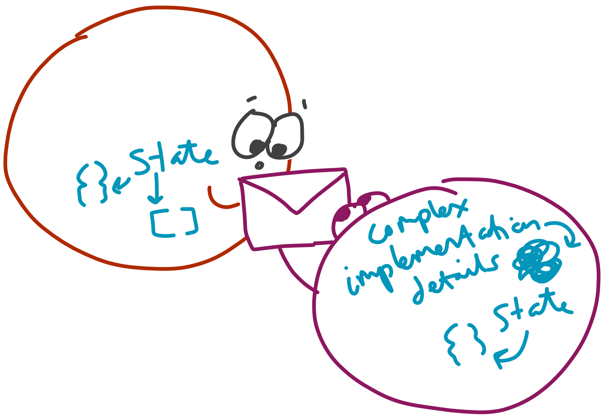

Advanced Javascript

Today
Giving you strong core JS skills, ready to tackle modern JS codebases!
Platforms

Agenda
- Core language
- Data-structures
- Objects
- Async
- Tooling
Method
- Demo
- Exercise
- Deepen
Our guide
console.log(anything)
Ages of JS
ES3(obsolete)ES5 sloppy(avoid)- ES5 strict
- ES.Next
Landscape diagram

Strict
// <- first non-comment line of file or function
"use strict";
Tightens up language
- new to JS? Not missing anything!
- removes
with - bans duplicate properties
- implicit globals
Today: ES5 strict, & ES6
All code will run in strict, with ES6.
Exercise intro
./exercises/some-name
exercise.js
cd ./exercises/some-name
node verify
Core
Aim
- Effective "programming in the small"
- Writing JS like a native
Variables
Two ages
- Pre-ES.next:
var - Post:
let,const
var
var someVariable;
var anotherVariable = "hello";
undefined vs undeclared
var notDefined;
console.log(notDefined); // ?
Undeclared
var someVar;
console.log(smeVar); // typo, what happens??
const
const doesNotChange = "hi";
// throws TypeError
doesNotChange = "I'll try my luck";
Rule: use const if possible
- one less source of bugs
- variables stand out
let
let hiThere = "hello";
if(true) {
let hiThere = "GOODBYE";
}
console.log(hiThere) // which?
Block scope
for(let i = 0; i++; i < 10) {
console.log(i);
}
// reference error
console.log(i);
Diagram of block scope

Rule: use let in loops etc
- one less source of bugs
- clearer where variables belong
What about var?
var = function scoped
Function scope
Diagram of function scope

One weird quirk
function main() {
// what happens here?
console.log(i);
for(var i = 0; i<10; i++) {
console.log(i);
}
}
Hoisting
function main() {
⚡️⚡️⚡️⚡️⚡️⚡️⚡️⚡️⚡️⚡️⚡️⚡️⚡️⚡️
# this is the 'hoisting zone', where
# all var statements are hoisted before invocation
SCOPE := { i: undefined }
# NOTE: JUST for intuition - lightning bolt sections
# are to give intuition for interpreter actions
⚡️⚡️⚡️⚡️⚡️⚡️⚡️⚡️⚡️⚡️⚡️⚡️⚡️⚡️
console.log(i);
for(var i = 0; i<10; i++) {
console.log(i);
}
}
Global scope
// browser - sloppy mode
something = "I am global";
// browser - strict mode
window.something = "I am global";
// node
global.something = "I am global";
Acessing global object
this; // sloppy, outside functions
window; // browser
global; // node
Exercise!
exercises/variables
Primitives
String
var name = 'Tim';
var opinion = "Double quotes: they're worth it";
var complete = `${name}: ${opinion}`;
Template strings
var complete = ${name}: ${opinion};
var es5Html = "<h1>Ugh</h1>" +
"<p>This is horrid</p>";
var html = `
<h1>Writing HTML with ES.Next</h1>
<p>Much nicer</p>
`;
Number
var floaty = 1;
var floatsAreApproximate = 0.1 + 0.2; // ?
Boolean
var t = true;
Quiz: truthy vs falsy
var empty = Boolean(""); // true
Boolean("hello"); // ?
Boolean(0); // ?
Boolean(1); // ?
Boolean(7); // ?
Boolean(true); // ?
Quiz
var booly = new Boolean(false);
Boolean(booly);
Rule: never wrap primitives
// ARRRRRGGGHHHH!!!!!
var x = new String("");
var 1 = new Number("");
Rule: use Boolean
var x = "";
var coerced = Boolean(x);
// NOOOOOOOOOO - never wrap primitives
var evil = new Boolean(false);
undefined and null
var x; // ?
var y = null;
null & undefined
A nuisance since 1995.
Comparison
Yes == has issues
Rule: always use ===
But ONE time to use ==
Detecting null or undefined
var undefinedNotEqeqeqNull = undefined === null; // false
// what a chore!
if(x === null || x === undefined) {
}
var nullish = x == null;
Rule: use == null
var nullish = x == null;
===
- Same type?
Same value?
Special cases:
NaN !== NaN- Objects (non primitives): compares by identity, not value
Functions

Three ways to define
Declare
function add(a,b) {
return a + b;
}
Expression
var add = function(a, b) {
return a + b;
}
Fat-arrow
// note: lack of `return`
var add = (a, b) => a + b;
// note: multiple expressions requires {} and `return`
var twoStep = (a, b) => { console.log(a); return b }
Evaluating functions
var result = add(add(10, 5), add(5, add(-5, 5)));
// steps for JS to evaluate right-hand-side
add(add(10, 5), add(5, add(-5, 5)));
add(15 , add(5, add(-5, 5)));
add(15 , add(5, 0 ));
add(15 , 5 );
20
Why are functions important?
Establishing languages is a powerful way to control complexity
Languages?
Imagine if JS had only one more feature...
if
if(testedForTruthy) {
console.log("was truthy");
} else {
console.log("was falsy");
}
Would we have enough to write programs?
Yes!
Wouldn't we be missing?
while / do / for / try
Sure, but...
...we can make them
function while_(test, block) {
if(test()) {
block();
return while_(test, block);
}
}
var x = 10;
while_(() => { x = x - 1 },
() => {
console.log("X: " + x);
})
Functions = the core
A language to describe problems
Establishing languages controls complexity
SICP
Parameters
// variable length functions
function sprintf(format, ...args) {
console.log(format, ...args);
}
const pair = [1,2];
// can use ... in calls too!
sprint("%s %s", ...pair);
// default parameters
function log(n, base = 10) {
// ...
}
arguments
// in ES5, useful where we use ...rest params in ES6
function callMe() {
// who needs parameters?
console.log("Hello " + arguments[0]);
}
callMe("a");
Exercise!
exercises/functions-core
Functions, continued
Closures
- functions see var/let/const in surrounding function
- this link remains long after surrounding fn clears

Context
We can see variables in functions that wrap us (red)
Privacy
We can't see variables from inner functions (blue)
Coding interview spoiler
var elements = document.querySelectorAll("button");
// What is wrong here? How can we solve?
for(var i = 0; i < elements.length; i++) {
var element = elements[i];
element.addEventListener("click", function() {
console.log(element.innerHTML);
});
}
Exercise
exercise/closures
Ordered data-structures
Array
For ordered data
Ordered
const primeMinisters = ["Cameron", "Brown", "Blair", "Major"];
primeMinisters[0] // Cameron;
primeMinisters[primeMinisters.length - 1] // Major - no negative indexes :(
console.log(primeMinisters.length) // 4
Extension
const primeMinisters = ["Cameron", "Brown", "Blair", "Major"];
primeMinisters.unshift("Fry"); // at start
primeMinisters.push("Thatcher"); // at end
// what did we learn about const?
console.log(primeMinisters.length) // 6
primeMinisters.pop(); // drops end
primeMinisters.shift(); // drops start
console.log(primeMinisters.length) // 4
Subsets
const primeMinisters = ["Cameron", "Brown", "Blair", "Major"];
const lastLabourGovernment = primeMinisters.slice(1, 3);
lastLabourGovernment.reverse().join(" then ") // Blair then Brown
primeMinisters.sort();
// what can we tell about .sort() and mutation?
console.log(primeMinisters) // [ 'Blair', 'Brown', 'Cameron', 'Major' ]
// and sort order?
primeMinisters.sort((a,b) => a.length - b.length)
console.log(primeMinisters) // [ 'Blair', 'Brown', 'Major', 'Cameron' ]
for
const primeMinisters = ["Cameron", "Brown", "Blair", "Major"];
const initials = [];
for(let i = 0, l = primeMinisters.length; i < l; i++) {
initials[i] = primeMinisters[i][0];
}
Array-likes
- In JS,
argumentsobject - In DOM,
NodeList
for ... in
const primeMinisters = ["Cameron", "Brown", "Blair", "Major"];
// what... is this allowed?
primeMinisters.metaData = "hi";
// for ... in will go over all properties of arrays
const initials = [];
for(let i in primeMinisters) {
initials[i] = primeMinisters[i][0];
}
for .. of
const primeMinisters = ["Cameron", "Brown", "Blair", "Major"];
primeMinisters.metaData = "hi";
// ES6 for ... of goes over VALUES of iterables
const initials = [];
for(let pm of primeMinisters) {
initials.push(pm[0]);
}
Rule: avoid for ... in/of on arrays
Functional iteration
// ES5 'array additions'
const primeMinisters = ["Cameron", "Brown", "Blair", "Major"];
primeMinisters.filter((p) => p[0] === "B") // ["Brown","Blair"];
primeMinisters.map((p) => p[0]) // [ 'B', 'B', 'M', 'C' ]
primeMinisters.reduce((s, e) => s + ":" + e) // 'Blair:Brown:Major:Cameron'
Rule: prefer functional iterators
- intention revealing
- shorter, less error-prone
Remember: compares by identity
const byValue = [1,2] === [1,2]; // false
const couldStringify = JSON.stringify([1,2])
=== JSON.stringify([1,2]); // true
Exercise
exercises/arrays
Key-value data-structures
Objects, used as dictionaries
const enToFr = {};
enToFr.hello = "bonjour";
enToFr.cheese = "fromage";
// equivalent
console.log(enToFr.hello);
console.log(enToFr["hello"]);
Keys are strings, values = any
const dict = {};
dict[10] = "ten";
dict["10"] // "ten"
// general rule: calls toString on non-strings
const convertsToTen = {
toString: () => "10"
};
dict[convertsToTen] // "ten"
ES6 - dynamic keys
// ES6
function create(property, value) {
return {["id:" + property]: value}
}
// ES5
function create(property, value) {
var o = {};
o["id:" + property] = value;
return o;
}
Missing features
const dict = {};
dict[1] = "hello";
// how to count?
dict.length // undefined
Object.keys(dict).length // costs O(N)
Map: ES6 to rescue
const m = new Map;
const o = {};
m.size // 0
const a = [1,2];
const b = [1,2];
o = {[a]: "A", [b]: "B"}
Object.keys(o).length // 1
m.set(a, "A");
m.set(b, "B");
m.size // 2
// can you see why this is happening?
m.get(a) // A
o[a] // B
Maps: for .. of
const m = new Map;
m.set("A", 1);
m.set("B", 2);
for(let i in m) {
console.log(i) // not called! why?
}
for(let i of m) {
console.log(i) // ["A", 1], ...
}
for(let i of m.keys()) {
console.log(i) // "A", "B"
}
for(let i of m.values()) {
console.log(i) // 1, 2
}
m.forEach((v, k) => console.log(v, k))
Set
// ES6 only
const s = new Set;
s.add([1,2]);
s.has([1,2]) // false
s.add(1);
s.has(1); // true
s.size // 2
s.add(1);
s.add(1);
s.size // 2
Exercise
exercises/maps-objects-sets
Objects
EverythingIsAnObject... ?
var iAmAnObject = {};
var soAmI = 5;
soAmI.toFixed(2);
var meToo = "goo";
meToo.join("since I have methods");
var imAnObject = [];
'Object' is overloaded
Definitions in JS
- everything that isn't
null/undefined - empty objects used as key-value stores
- things that have functions in them that reference 'this'
So which is it?
None of the above
Let's ask Alan Kay
OOP to me means only messaging, local retention and hiding of state, and extreme late-binding of all things.
Alan Kay
So what do Alan Kay's objects look like?

Messaging & late-binding
- component sends a message
- another components receives and does... whatever it likes
Results of messaging
- decouples intent from implementation (polymorphism)
- can't see/modify state of receiver
What the hell are objects?
'Objects' are a pattern
- not the specific implementation
Alan Kay's objects are
- entities that accept messages
- that access hidden state
- and do something in response to the message
Implementations
What do we need?
- identity
- state
- messages
Without additional syntax
Objects via closures
// what technique is being used?
function Counter() {
var count = 0;
return {
increment: () => {
count += 1;
},
count: () => count,
};
}
const c1 = counter();
const c2 = counter();
c1.increment();
c1.count(); // 1
c2.count(); // 0
Issue
var n = 1e6;
const counters = [];
// lots of copies of `increment` and `count`!
while(n--) {
counters.push(Counter());
}
Examples where this matters
- Arrays
- Element - DOM
- Promise
- Function
- all will have 1,000s of instances
How do we share implementations?
Closures not enough
Language level help!
this
this on invocation
function couter() {
return {
// same fn for all instances!
increment: counterIncrement,
count: 0,
};
}
var c1 = counter();
var c2 = counter();
c1.increment();
c2.count; // 0
function counterIncrement() {
this.count += 1;
}
Magic argument this
// this = someObject
someObject.someProperty();
const someProperty = this.someObject;
// this = enclosing this, likely global
someProperty();
Classic bug
var someObject = {
name: "lil' listeny",
listen: function(el) {
el.addEventListener("click", this.handle)
},
handle: function() {
console.log(this.name);
},
};
// what do we see console.log'd?
someObject.listen(button);
button.click();
How can we fix?
=>
var someObject = {
// ...
listen: function(el) {
// fat arrow has lexical this! i.e this of current scope
el.addEventListener("click", (e) => this.handle(e))
},
// ...
};
fn.bind(thisValue)
var someObject = {
// ...
listen: function(el) {
// .bind returns a new fn, as if bound to this via closure
el.addEventListener("click", this.handle.bind(this))
},
// ...
};
Writing bind
function bind(fn, thisValue) {
return function() {
return fn.apply(thisValue, arguments);
}
}
Enough?
Nope
e.g
const el = document.querySelector("");
console.log(_.keys(el).length) // 72!
document.querySelectorAll("") // 1,002 for bbc.co.uk
// need to track per object
el.myCustomMethod = () => 1
Costly to assume all objects different
Want: flexibility and efficency
Solution: prototypes!

Additional benefit
- some things modelled in chain
- e.g store common tools at
Object
Chain

Lookup algorithm
// always at run-time
function getProperty(object, prop) {
if(object.hasOwnProperty(prop)) {
return object[prop];
} else {
if(object.__proto__) {
getProperty(object.__proto__, prop);
} else {
return undefined;
}
}
}
Creating object with prototype
function Structure(width, height) {
const self = Object.create(structurePt)
self.width = width;
self.height = height;
return self;
}
const structurePt = {
squareArea: function() {
return this.width * this.height;
},
};
function House(w, h, bedrooms) {
const self = Object.create(housePt)
Structure.call(self, w, h);
self.bedrooms = bedrooms;
return self;
}
const housePt = Object.create(Structure());
housePt.sleeps = function() {
return this.bedrooms.reduce((s,b) => s + b.sleeps, 0)
};
Enough?
Boilerplate
new to rescue!
function Structure(width, height) {
this.width = width;
this.height = height;
}
Structure.prototype = {
squareArea: function() {
return this.width * this.height;
},
};
function House(w, h, bedrooms) {
Structure.call(this, w, h);
this.bedrooms = bedrooms;
}
House.prototype = new Structure;
House.prototype.sleeps = function() {
return this.bedrooms.reduce((s,b) => s + b.sleeps, 0)
};
Using new
const house = new House(10, 20, []);
house.sleeps() // 0
new in depth
function newOperator(constructor, ...args) {
var instance = Object.create(constructor.prototype);
var returnVal = constructor.apply(instance, args);
return typeof returnVal == "object" ? returnVal : instance;
}
Enough?
Yes, probably
BUT
Moar!
class Structure{
constructor(width, height) {
this.width = width;
this.height = height;
}
squareArea() {
return this.width * this.height;
}
}
class House extends Structure {
constructor(w, h, bedrooms) {
super(w,h)
this.bedrooms = bedrooms;
}
sleeps() {
return this.bedrooms.reduce((s,b) => s + b.sleeps, 0)
}
}
Using

Async
Async IO
- ubiquitious in JS
- the ecosystem default
- vs subset of libraries in Ruby EM, Python Twisted
Let's compare
Synchronous IO
- AKA 'blocking IO'
1 // we'll not continue to the next line until the OS
2 // has read the file and provided it back to our process
3 var contents = fs.readFileSync("/tmp/hello", "utf8");
4
5 console.log("End of source file");
Asynchronous IO
- AKA 'non-blocking IO'
1 fs.readFile("/tmp/hello", { encoding: "utf8" },
2 function(err, content) {
3 // (2/2) ...we get here
4 console.log("Read the file");
5 });
6
7 // (1/2) we'll get here waaaaaaaaaaaay before...
8 console.log("End of source file");
Clearing the stack
- no code ever runs simultaneously
- while code is running, no callbacks fire
Diagram loop

Rule: don't block the loop
- avoid long running, synchronous code
- chunk
- or delegate to other processes/WebWorkers
Diagram: starving the lop

Sources of async
setTimeout- AJAX
- IndexedDB, WebWorkers
- most Node APIs (
fs,child_process)
Stacks
- languages with functions need a stack
- keeps point to return to
- stack 'unravels' with errors
Stack diagram

With async, no one can hear you throw

e.g
// this stack is long gone...
try {
create({}, function() {
// ...
})
} catch(e) {
// never going to catch!
}
// waaaaay before...(1)
function create(data, cb) {
$post("/api/create", data, function(err, ok) {
if(err) {
// (1)...we get here
throw err;
}
})
}
Rule: don't throw in async
Promises
An IOU
- A value, returned immediately
- Fulfilled or rejected - once
- Use before or after resolved
- Chain together
- Flow control for async
Intuition

Promises in practice
Steps in process
.then(transformResolve, transformReject)
const user = getUser(params["id"]);
const profile = user.then(getProfile);
const accountPage = Promise.all([user,profile])
.then(accountPageTemplate);
Present/use value
- finally used more like callback
accountPage.then(
renderHtml,
renderErrorMessage
);
then is
- Mostly: recipe for new values
- Sometimes: actions when resolved
Where?
- ES5: libraries
- ES6: built-in
- Libraries actually better
Promise tools
// returns a promise, if x is:
// - a non-promise, a fulfilled promise for 'x'
// - a promise, that promise
Promise.resolve(x)
// a promise rejected with 'x'
Promise.reject(x)
// a promise for an array/object with all resolved
// promises values - works with all iterables
Promise.all([promise, value, promiseB, valueB])
// a promise for first resolved
Promise.race([promise, value, promiseB, valueB])
Flow control
SomeQuery
.then(transform)
.then(function(value) {
if(!isOk(value)) {
return Promise.reject(Error("Not ok!"))
}
return someTest(value)) ?
QueryA(value) : QueryB(value);
})
.catch((err) => Promise.reject(Error("Query failed: " + err)))
.finally(function() {
// anything that happens if resolved/rejected
});
Rule: don't use promises as callbacks
- unless you're applying side-effects
Promises + collections
var userIds = [10,20,30,50,100];
// array of promises
var users = userIds.map(User.get);
// promise for array of {user, account}
var usersWithAccounts = Promise.all(users)
.then(function(users) {
return users.map(function(user) {
return Promise.all({
user: user,
account: Account.get(user)
});
});
});
Promises conclusion
- promises = values for async
- don't just use as callbacks
- think about transformers for the values
- chain promises flows together
Let's try
- exercises/promises
Build tools
Package management
npm- great for back/frontendjspm- good future proofingbower- probably had its day
Modules
SystemJS- ES6 style modulesbrowserify- builds CommonJS style moduleswebpack- supports AMD/CommonJS (ES6 with plugins)
Quality
ESLint
eslint exercises/some-exercise/exercise.js
JSCS
jscs exercises/some-exercise/exercise.js
Developer Tools
Chrome
- CPU
- memory
- timeline
Node.js
- node debugger - stepping etc
- DTrace - more complex, same techniques
Hands-on
exercise/profiling/index.html
Wrap!
Advanced JS
- Know the core, love functions
- Data-structures > code
- Objects, the right way
- Bring backup with async
- Lean on tools!